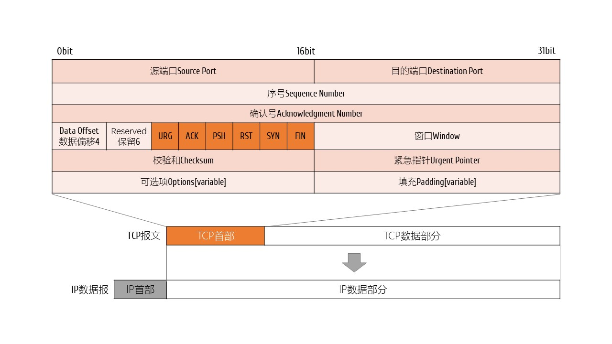
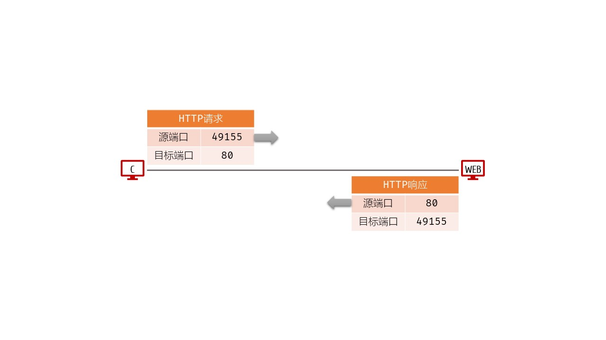
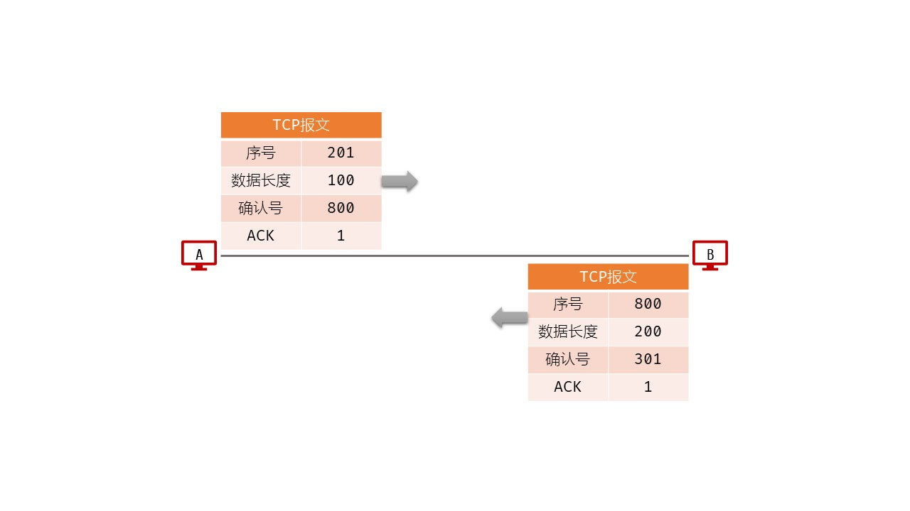
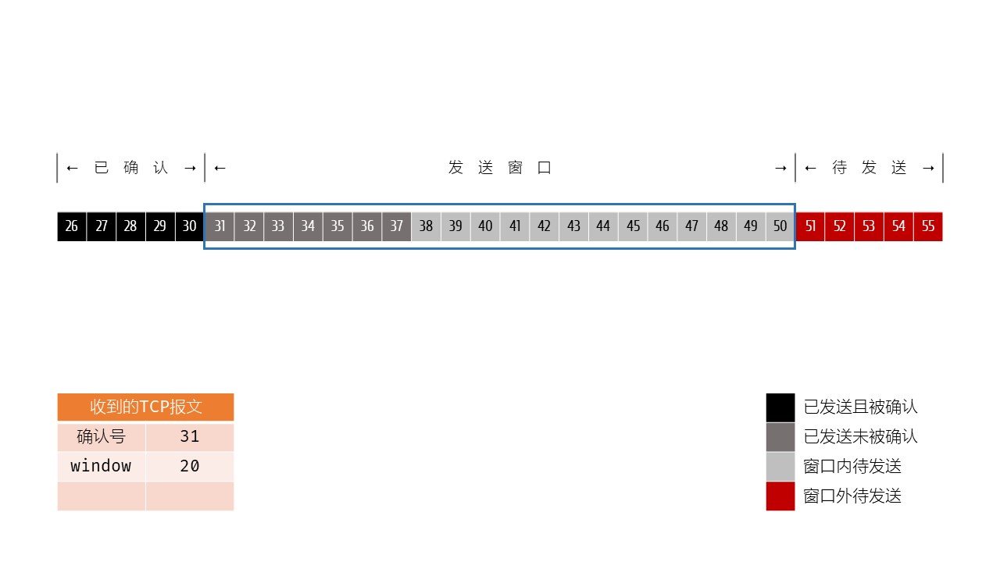
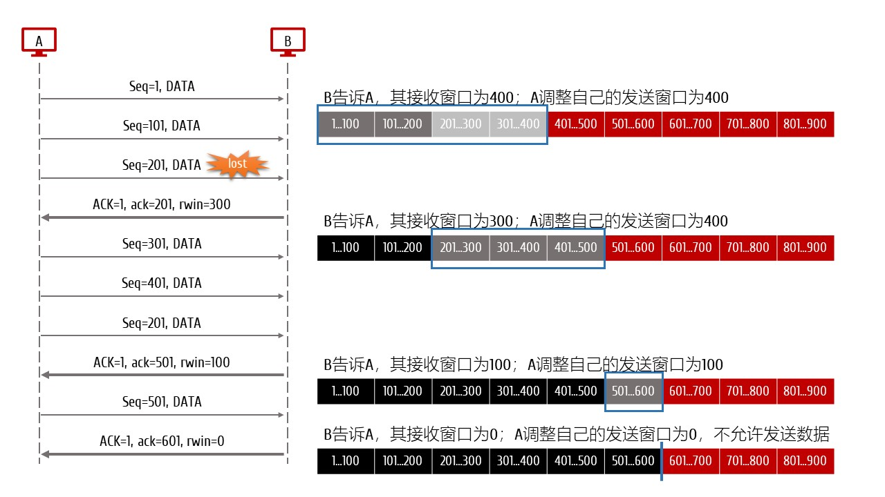
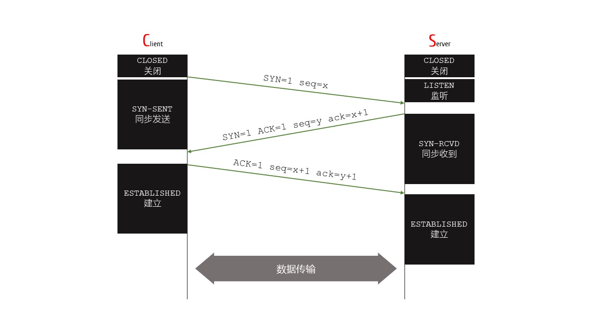
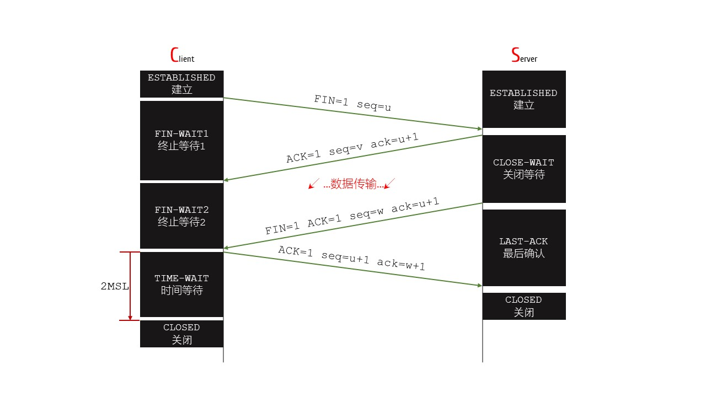

- 概述 Overview
- TCP - Transmission Control Protocol
- 面向连接
- 点对点
- 全双工通信
- 可靠交付
- 面向字节流
- 报文 Packet
- 序号：32bit；TCP报文数据部分第一个字节的序号；增加到最大值后，重新回到0
- 确认号：32bit；对待发TCP报文数据部分的第一个字节序号的确认；增加到最大值后，重新回到0；控制字段ACK为1时才有效；如果确认号为n，则表示序号n-1之前的数据已经收到，现在希望接收序号为n的数据
- 数据偏移：4bit，以4B为单位；指的是TCP报文首部的长度；首部固定长度是20字节，所以该字段最小值为0101；相应的，最大值为1111，对应首部最大的长度为60字节
- 窗口：16bit，指定数据发送方的发送能力，同时也表示了自己的接收能力；这种根据接收方的接收能力来控制发送方的发送能力，称为流量控制

TCP报文格式
- 端口应用
- 客户端在端口49155向目标主机80端口的应用[WEB]发起HTTP请求
- 服务端在80端口处理请求后，回发一个响应给客户端

端口应用
- 序号和确认号应用
- A发送序号为201开始的报文，长度是100；同时对B发送的序号800之前的报文进行确认，并希望收到B序号800开始的报文
- B发送序号为800开始的报文，长度是200；同时对A发送的序号300之前的报文进行确认，并希望收到A序号301开始的报文

序号和确认号应用
[] 主机A收到主机B发过来的TCP报文，序号为501，数据长度为200B，则主机A给主机B的响应报文中，序号为[701]
[] 已知发送窗口大小为500，某主机收到的确认号为201。如果已经发送了300B的数据，则还可以发送[400B]的数据
- [分析]发送了300B，对方确认了200B，确认过的数据报被移出缓存，窗口仅仅保留没有确认的数据报，即：还有100B没有确认；窗口大小是500，所以还可以发送400B
可靠传输
- 可靠的本质是[确认]和[超时重传]
- 以滑动窗口机制做保障；窗口大小以字节为单位；进入窗口的数据才可以发送；已确认的数据应移出窗口

可靠传输
流量控制
- Follow control，接收方控制发送方的发送窗口大小，让发送方不要发太快，以便接收方能来得及接收
- 利用滑动窗口机制实现
- 发送方可以多次发送；直到把发送窗口已满
- 接收方可以累计确认
- 为避免0窗口导致双方无限等待下去，TCP为每个连接都创建了一个持续计时器。只要某一方收到0窗口，就启动计时器。计时到，就主动发送一个窗口探测报文，以便恢复正常数据通信

流量控制
拥塞控制
- 慢开始 slow start
- 拥塞避免 congestion avoidance
- 快重传 fast retransmit
- 快恢复 fast recovery
- 更多信息，请参考 拥塞控制
三次握手
- 连接建立-三次握手
- 数据通信
- 连接释放-四次挥手
- 三次握手
- 第一次握手：C发送请求，同步位置1，该同步请求报文消耗一个序号x，但是不允许携带数据[why]
- 第二次握手：S如果同意建立连接，则确认并回复同步响应报文，消耗一个序号y，同样不允许携带数据
- 第三次握手：B对S的响应报文进行确认；可以携带报文

三次握手
四次挥手

四次挥手
- 关键点
- 发送方没有数据要发送，发送释放连接FIN请求；接收方确认后，可以继续发送自己还未发送完的数据；当前连接是半连接状态：发送方到接收方的连接是关闭的
- 接收方发完数据了，也向发送方发送释放连接FIN请求；等链路上所有的数据报都达到目标主机后，连接被彻底释放
- Reading
- TCP Three-Way Handshake: A Comprehensive
Guide
- RFC 793